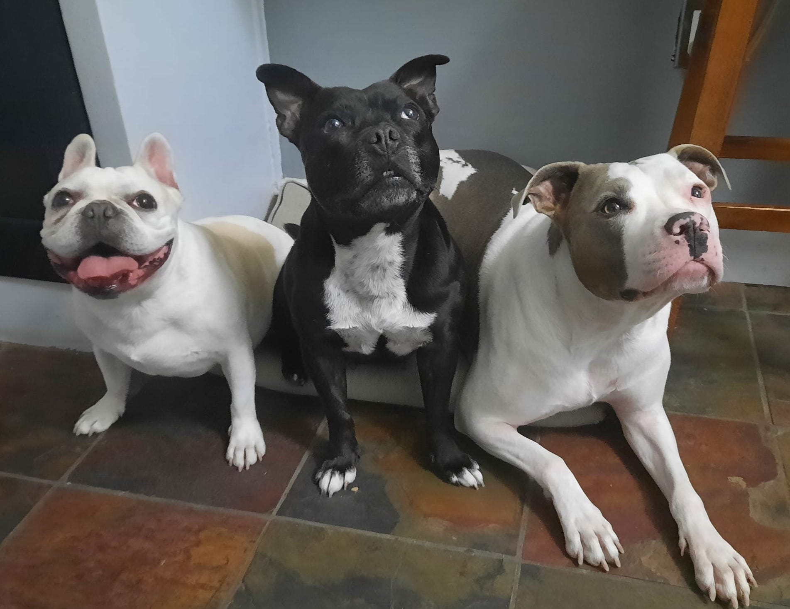

ggplot 102: Facets, Scales, Labels, and Themes (but now 🐶) recitation solutions
Week 6
Introduction
We will practice what we learned this week in ggplot102 on:
Load libraries and data
Before we get started, let’s load our libraries and data. Today we will be looking again at some different data from the Tidy Tuesday project (here is the Github repo) about dog breeds.
install.packages("tidytuesdayR")library(tidyverse)
library(tidytuesdayR)We will be using the data that is from February 1, 2022, so let’s download it. The readme for this data is here.
tuesdata <- tidytuesdayR::tt_load('2022-02-01')---- Compiling #TidyTuesday Information for 2022-02-01 ----
--- There are 3 files available ---
── Downloading files ───────────────────────────────────────────────────────────
1 of 3: "breed_traits.csv"
2 of 3: "trait_description.csv"
3 of 3: "breed_rank.csv"Let’s look at it
tuesdata is a list of 3 dataframes breed_traits, trait_description and breed_rank.
glimpse(tuesdata)List of 3
$ breed_traits : spc_tbl_ [195 × 17] (S3: spec_tbl_df/tbl_df/tbl/data.frame)
..$ Breed : chr [1:195] "Retrievers (Labrador)" "French Bulldogs" "German Shepherd Dogs" "Retrievers (Golden)" ...
..$ Affectionate With Family : num [1:195] 5 5 5 5 4 5 3 5 5 5 ...
..$ Good With Young Children : num [1:195] 5 5 5 5 3 5 5 3 5 3 ...
..$ Good With Other Dogs : num [1:195] 5 4 3 5 3 3 5 3 4 4 ...
..$ Shedding Level : num [1:195] 4 3 4 4 3 1 3 3 3 2 ...
..$ Coat Grooming Frequency : num [1:195] 2 1 2 2 3 4 2 1 2 2 ...
..$ Drooling Level : num [1:195] 2 3 2 2 3 1 1 3 2 2 ...
..$ Coat Type : chr [1:195] "Double" "Smooth" "Double" "Double" ...
..$ Coat Length : chr [1:195] "Short" "Short" "Medium" "Medium" ...
..$ Openness To Strangers : num [1:195] 5 5 3 5 4 5 3 3 4 4 ...
..$ Playfulness Level : num [1:195] 5 5 4 4 4 5 4 4 4 4 ...
..$ Watchdog/Protective Nature: num [1:195] 3 3 5 3 3 5 2 5 4 4 ...
..$ Adaptability Level : num [1:195] 5 5 5 5 3 4 4 4 4 4 ...
..$ Trainability Level : num [1:195] 5 4 5 5 4 5 3 5 5 4 ...
..$ Energy Level : num [1:195] 5 3 5 3 3 4 4 3 5 3 ...
..$ Barking Level : num [1:195] 3 1 3 1 2 4 4 1 3 5 ...
..$ Mental Stimulation Needs : num [1:195] 4 3 5 4 3 5 4 5 5 3 ...
..- attr(*, "spec")=
.. .. cols(
.. .. Breed = col_character(),
.. .. `Affectionate With Family` = col_double(),
.. .. `Good With Young Children` = col_double(),
.. .. `Good With Other Dogs` = col_double(),
.. .. `Shedding Level` = col_double(),
.. .. `Coat Grooming Frequency` = col_double(),
.. .. `Drooling Level` = col_double(),
.. .. `Coat Type` = col_character(),
.. .. `Coat Length` = col_character(),
.. .. `Openness To Strangers` = col_double(),
.. .. `Playfulness Level` = col_double(),
.. .. `Watchdog/Protective Nature` = col_double(),
.. .. `Adaptability Level` = col_double(),
.. .. `Trainability Level` = col_double(),
.. .. `Energy Level` = col_double(),
.. .. `Barking Level` = col_double(),
.. .. `Mental Stimulation Needs` = col_double()
.. .. )
..- attr(*, "problems")=<externalptr>
$ trait_description: spc_tbl_ [16 × 4] (S3: spec_tbl_df/tbl_df/tbl/data.frame)
..$ Trait : chr [1:16] "Affectionate With Family" "Good With Young Children" "Good With Other Dogs" "Shedding Level" ...
..$ Trait_1 : chr [1:16] "Independent" "Not Recommended" "Not Recommended" "No Shedding" ...
..$ Trait_5 : chr [1:16] "Lovey-Dovey" "Good With Children" "Good With Other Dogs" "Hair Everywhere" ...
..$ Description: chr [1:16] "How affectionate a breed is likely to be with family members, or other people he knows well. Some breeds can be"| __truncated__ "A breed's level of tolerance and patience with childrens' behavior, and overall family-friendly nature. Dogs sh"| __truncated__ "How generally friendly a breed is towards other dogs. Dogs should always be supervised for interactions and int"| __truncated__ "How much fur and hair you can expect the breed to leave behind. Breeds with high shedding will need to be brush"| __truncated__ ...
..- attr(*, "spec")=
.. .. cols(
.. .. Trait = col_character(),
.. .. Trait_1 = col_character(),
.. .. Trait_5 = col_character(),
.. .. Description = col_character()
.. .. )
..- attr(*, "problems")=<externalptr>
$ breed_rank : spc_tbl_ [195 × 11] (S3: spec_tbl_df/tbl_df/tbl/data.frame)
..$ Breed : chr [1:195] "Retrievers (Labrador)" "French Bulldogs" "German Shepherd Dogs" "Retrievers (Golden)" ...
..$ 2013 Rank: num [1:195] 1 11 2 3 5 8 4 9 13 10 ...
..$ 2014 Rank: num [1:195] 1 9 2 3 4 7 5 10 12 11 ...
..$ 2015 Rank: num [1:195] 1 6 2 3 4 8 5 9 11 13 ...
..$ 2016 Rank: num [1:195] 1 6 2 3 4 7 5 8 11 13 ...
..$ 2017 Rank: num [1:195] 1 4 2 3 5 7 6 8 10 13 ...
..$ 2018 Rank: num [1:195] 1 4 2 3 5 7 6 8 9 12 ...
..$ 2019 Rank: num [1:195] 1 4 2 3 5 6 7 8 9 11 ...
..$ 2020 Rank: num [1:195] 1 2 3 4 5 6 7 8 9 10 ...
..$ links : chr [1:195] "https://www.akc.org/dog-breeds/labrador-retriever/" "https://www.akc.org/dog-breeds/french-bulldog/" "https://www.akc.org/dog-breeds/german-shepherd-dog/" "https://www.akc.org/dog-breeds/golden-retriever/" ...
..$ Image : chr [1:195] "https://www.akc.org/wp-content/uploads/2017/11/Labrador-Retriever-illustration.jpg" "https://www.akc.org/wp-content/uploads/2017/11/French-Bulldog-Illo-2.jpg" "https://www.akc.org/wp-content/uploads/2017/11/German-Shepherd-Dog-Illo-2.jpg" "https://www.akc.org/wp-content/uploads/2017/11/Golden-Retriever-Illo-2.jpg" ...
..- attr(*, "spec")=
.. .. cols(
.. .. Breed = col_character(),
.. .. `2013 Rank` = col_double(),
.. .. `2014 Rank` = col_double(),
.. .. `2015 Rank` = col_double(),
.. .. `2016 Rank` = col_double(),
.. .. `2017 Rank` = col_double(),
.. .. `2018 Rank` = col_double(),
.. .. `2019 Rank` = col_double(),
.. .. `2020 Rank` = col_double(),
.. .. links = col_character(),
.. .. Image = col_character()
.. .. )
..- attr(*, "problems")=<externalptr>
- attr(*, ".tt")= 'tt' chr [1:3] "breed_traits.csv" "trait_description.csv" "breed_rank.csv"
..- attr(*, ".files")='data.frame': 3 obs. of 3 variables:
.. ..$ data_files: chr [1:3] "breed_traits.csv" "trait_description.csv" "breed_rank.csv"
.. ..$ data_type : chr [1:3] "csv" "csv" "csv"
.. ..$ delim : chr [1:3] "," "," ","
..- attr(*, ".readme")=List of 2
.. ..$ node:<externalptr>
.. ..$ doc :<externalptr>
.. ..- attr(*, "class")= chr [1:2] "xml_document" "xml_node"
..- attr(*, ".date")= Date[1:1], format: "2022-02-01"
- attr(*, "class")= chr "tt_data"Note tuesdata is a list of 3 dataframes.
We will use the $ to see the different dataframes individually.
glimpse(tuesdata$breed_traits)Rows: 195
Columns: 17
$ Breed <chr> "Retrievers (Labrador)", "French Bulldogs…
$ `Affectionate With Family` <dbl> 5, 5, 5, 5, 4, 5, 3, 5, 5, 5, 5, 3, 5, 4,…
$ `Good With Young Children` <dbl> 5, 5, 5, 5, 3, 5, 5, 3, 5, 3, 3, 5, 5, 5,…
$ `Good With Other Dogs` <dbl> 5, 4, 3, 5, 3, 3, 5, 3, 4, 4, 4, 3, 3, 3,…
$ `Shedding Level` <dbl> 4, 3, 4, 4, 3, 1, 3, 3, 3, 2, 4, 3, 1, 2,…
$ `Coat Grooming Frequency` <dbl> 2, 1, 2, 2, 3, 4, 2, 1, 2, 2, 2, 2, 5, 2,…
$ `Drooling Level` <dbl> 2, 3, 2, 2, 3, 1, 1, 3, 2, 2, 1, 1, 1, 3,…
$ `Coat Type` <chr> "Double", "Smooth", "Double", "Double", "…
$ `Coat Length` <chr> "Short", "Short", "Medium", "Medium", "Sh…
$ `Openness To Strangers` <dbl> 5, 5, 3, 5, 4, 5, 3, 3, 4, 4, 4, 3, 5, 4,…
$ `Playfulness Level` <dbl> 5, 5, 4, 4, 4, 5, 4, 4, 4, 4, 4, 4, 4, 4,…
$ `Watchdog/Protective Nature` <dbl> 3, 3, 5, 3, 3, 5, 2, 5, 4, 4, 5, 3, 5, 4,…
$ `Adaptability Level` <dbl> 5, 5, 5, 5, 3, 4, 4, 4, 4, 4, 4, 3, 5, 3,…
$ `Trainability Level` <dbl> 5, 4, 5, 5, 4, 5, 3, 5, 5, 4, 4, 5, 4, 4,…
$ `Energy Level` <dbl> 5, 3, 5, 3, 3, 4, 4, 3, 5, 3, 4, 5, 4, 4,…
$ `Barking Level` <dbl> 3, 1, 3, 1, 2, 4, 4, 1, 3, 5, 4, 3, 4, 3,…
$ `Mental Stimulation Needs` <dbl> 4, 3, 5, 4, 3, 5, 4, 5, 5, 3, 4, 5, 4, 4,…glimpse(tuesdata$trait_description)Rows: 16
Columns: 4
$ Trait <chr> "Affectionate With Family", "Good With Young Children", "G…
$ Trait_1 <chr> "Independent", "Not Recommended", "Not Recommended", "No S…
$ Trait_5 <chr> "Lovey-Dovey", "Good With Children", "Good With Other Dogs…
$ Description <chr> "How affectionate a breed is likely to be with family memb…glimpse(tuesdata$breed_rank)Rows: 195
Columns: 11
$ Breed <chr> "Retrievers (Labrador)", "French Bulldogs", "German Shephe…
$ `2013 Rank` <dbl> 1, 11, 2, 3, 5, 8, 4, 9, 13, 10, 24, 20, 6, 7, 16, 14, 18,…
$ `2014 Rank` <dbl> 1, 9, 2, 3, 4, 7, 5, 10, 12, 11, 22, 18, 6, 8, 15, 13, 19,…
$ `2015 Rank` <dbl> 1, 6, 2, 3, 4, 8, 5, 9, 11, 13, 20, 17, 7, 10, 15, 12, 18,…
$ `2016 Rank` <dbl> 1, 6, 2, 3, 4, 7, 5, 8, 11, 13, 18, 16, 9, 10, 14, 12, 19,…
$ `2017 Rank` <dbl> 1, 4, 2, 3, 5, 7, 6, 8, 10, 13, 15, 17, 9, 11, 14, 12, 19,…
$ `2018 Rank` <dbl> 1, 4, 2, 3, 5, 7, 6, 8, 9, 12, 13, 15, 10, 11, 16, 14, 18,…
$ `2019 Rank` <dbl> 1, 4, 2, 3, 5, 6, 7, 8, 9, 11, 10, 13, 12, 14, 17, 15, 16,…
$ `2020 Rank` <dbl> 1, 2, 3, 4, 5, 6, 7, 8, 9, 10, 11, 12, 13, 14, 15, 16, 17,…
$ links <chr> "https://www.akc.org/dog-breeds/labrador-retriever/", "htt…
$ Image <chr> "https://www.akc.org/wp-content/uploads/2017/11/Labrador-R…Top 5 breeds 2020
Write code to determine what the 5 most popular dog breeds in 2020 were. There are many ways to do this.
clean_names()
Because each of these datasets has some non-conventional column names, I am going to run janitor::clean_names() on each df, and save them in my environment so I won’t have to keep using the dollar sign $ accessor. In this case, you can also access each data frame using the double [[]] brackets syntax.
library(janitor)
Attaching package: 'janitor'The following objects are masked from 'package:stats':
chisq.test, fisher.testbreed_traits <- clean_names(tuesdata$breed_traits)
trait_description <- clean_names(tuesdata$trait_description)
breed_rank <- clean_names(tuesdata$breed_rank)
# can also use the double brackets
# takes the first item in the list of tuesdata
# breed_traits <- tuesdata[[1]]Then let’s look at the beginning of each df.
head(breed_traits)| breed | affectionate_with_family | good_with_young_children | good_with_other_dogs | shedding_level | coat_grooming_frequency | drooling_level | coat_type | coat_length | openness_to_strangers | playfulness_level | watchdog_protective_nature | adaptability_level | trainability_level | energy_level | barking_level | mental_stimulation_needs |
|---|---|---|---|---|---|---|---|---|---|---|---|---|---|---|---|---|
| Retrievers (Labrador) | 5 | 5 | 5 | 4 | 2 | 2 | Double | Short | 5 | 5 | 3 | 5 | 5 | 5 | 3 | 4 |
| French Bulldogs | 5 | 5 | 4 | 3 | 1 | 3 | Smooth | Short | 5 | 5 | 3 | 5 | 4 | 3 | 1 | 3 |
| German Shepherd Dogs | 5 | 5 | 3 | 4 | 2 | 2 | Double | Medium | 3 | 4 | 5 | 5 | 5 | 5 | 3 | 5 |
| Retrievers (Golden) | 5 | 5 | 5 | 4 | 2 | 2 | Double | Medium | 5 | 4 | 3 | 5 | 5 | 3 | 1 | 4 |
| Bulldogs | 4 | 3 | 3 | 3 | 3 | 3 | Smooth | Short | 4 | 4 | 3 | 3 | 4 | 3 | 2 | 3 |
| Poodles | 5 | 5 | 3 | 1 | 4 | 1 | Curly | Long | 5 | 5 | 5 | 4 | 5 | 4 | 4 | 5 |
head(trait_description)| trait | trait_1 | trait_5 | description |
|---|---|---|---|
| Affectionate With Family | Independent | Lovey-Dovey | How affectionate a breed is likely to be with family members, or other people he knows well. Some breeds can be aloof with everyone but their owner, while other breeds treat everyone they know like their best friend. |
| Good With Young Children | Not Recommended | Good With Children | A breed’s level of tolerance and patience with childrens’ behavior, and overall family-friendly nature. Dogs should always be supervised around young children, or children of any age who have little exposure to dogs. |
| Good With Other Dogs | Not Recommended | Good With Other Dogs | How generally friendly a breed is towards other dogs. Dogs should always be supervised for interactions and introductions with other dogs, but some breeds are innately more likely to get along with other dogs, both at home and in public. |
| Shedding Level | No Shedding | Hair Everywhere | How much fur and hair you can expect the breed to leave behind. Breeds with high shedding will need to be brushed more frequently, are more likely to trigger certain types of allergies, and are more likely to require more consistent vacuuming and lint-rolling. |
| Coat Grooming Frequency | Monthly | Daily | How frequently a breed requires bathing, brushing, trimming, or other kinds of coat maintenance. Consider how much time, patience, and budget you have for this type of care when looking at the grooming effort needed. All breeds require regular nail trimming. |
| Drooling Level | Less Likely to Drool | Always Have a Towel | How drool-prone a breed tends to be. If you’re a neat freak, dogs that can leave ropes of slobber on your arm or big wet spots on your clothes may not be the right choice for you. |
head(breed_rank)| breed | x2013_rank | x2014_rank | x2015_rank | x2016_rank | x2017_rank | x2018_rank | x2019_rank | x2020_rank | links | image |
|---|---|---|---|---|---|---|---|---|---|---|
| Retrievers (Labrador) | 1 | 1 | 1 | 1 | 1 | 1 | 1 | 1 | https://www.akc.org/dog-breeds/labrador-retriever/ | https://www.akc.org/wp-content/uploads/2017/11/Labrador-Retriever-illustration.jpg |
| French Bulldogs | 11 | 9 | 6 | 6 | 4 | 4 | 4 | 2 | https://www.akc.org/dog-breeds/french-bulldog/ | https://www.akc.org/wp-content/uploads/2017/11/French-Bulldog-Illo-2.jpg |
| German Shepherd Dogs | 2 | 2 | 2 | 2 | 2 | 2 | 2 | 3 | https://www.akc.org/dog-breeds/german-shepherd-dog/ | https://www.akc.org/wp-content/uploads/2017/11/German-Shepherd-Dog-Illo-2.jpg |
| Retrievers (Golden) | 3 | 3 | 3 | 3 | 3 | 3 | 3 | 4 | https://www.akc.org/dog-breeds/golden-retriever/ | https://www.akc.org/wp-content/uploads/2017/11/Golden-Retriever-Illo-2.jpg |
| Bulldogs | 5 | 4 | 4 | 4 | 5 | 5 | 5 | 5 | https://www.akc.org/dog-breeds/bulldog/ | https://www.akc.org/wp-content/uploads/2017/11/Bulldog-Illo-2.jpg |
| Poodles | 8 | 7 | 8 | 7 | 7 | 7 | 6 | 6 | https://www.akc.org/dog-breeds/poodle-standard/ | https://www.akc.org/wp-content/uploads/2017/11/Standard-Poodle-illustration.jpg |
What are the most popular breeds in 2020, three ways.
breed_rank |>
filter(x2020_rank <= 5)# A tibble: 5 × 11
breed x2013_rank x2014_rank x2015_rank x2016_rank x2017_rank x2018_rank
<chr> <dbl> <dbl> <dbl> <dbl> <dbl> <dbl>
1 Retrievers … 1 1 1 1 1 1
2 French Bull… 11 9 6 6 4 4
3 German Shep… 2 2 2 2 2 2
4 Retrievers … 3 3 3 3 3 3
5 Bulldogs 5 4 4 4 5 5
# ℹ 4 more variables: x2019_rank <dbl>, x2020_rank <dbl>, links <chr>,
# image <chr>breed_rank |>
arrange(x2020_rank) |>
slice(1:5)# A tibble: 5 × 11
breed x2013_rank x2014_rank x2015_rank x2016_rank x2017_rank x2018_rank
<chr> <dbl> <dbl> <dbl> <dbl> <dbl> <dbl>
1 Retrievers … 1 1 1 1 1 1
2 French Bull… 11 9 6 6 4 4
3 German Shep… 2 2 2 2 2 2
4 Retrievers … 3 3 3 3 3 3
5 Bulldogs 5 4 4 4 5 5
# ℹ 4 more variables: x2019_rank <dbl>, x2020_rank <dbl>, links <chr>,
# image <chr>breed_rank |>
slice_min(x2020_rank, n = 5) # min because a low rank is "high"# A tibble: 5 × 11
breed x2013_rank x2014_rank x2015_rank x2016_rank x2017_rank x2018_rank
<chr> <dbl> <dbl> <dbl> <dbl> <dbl> <dbl>
1 Retrievers … 1 1 1 1 1 1
2 French Bull… 11 9 6 6 4 4
3 German Shep… 2 2 2 2 2 2
4 Retrievers … 3 3 3 3 3 3
5 Bulldogs 5 4 4 4 5 5
# ℹ 4 more variables: x2019_rank <dbl>, x2020_rank <dbl>, links <chr>,
# image <chr>Top 5 breeds across 2013-2020
What are the 5 most popular and the 5 least popular dogs across this time frame? There are many ways to do this. Hint: create a new variable that is a sum of all the ranks from 2013, allowing a composite score of the popularity of each dog breed across this time period.
# most popular
breed_rank |>
rowwise() |> # perform calculations rowwise
mutate(rank_sum = sum(across(x2013_rank:x2020_rank))) |>
ungroup() |> # remove rowwise
select(breed, rank_sum, everything()) |>
slice_min(n = 5, order_by = rank_sum) |> # take lowest 5 values by rank_sum
knitr::kable() # makes a nice formatted table| breed | rank_sum | x2013_rank | x2014_rank | x2015_rank | x2016_rank | x2017_rank | x2018_rank | x2019_rank | x2020_rank | links | image |
|---|---|---|---|---|---|---|---|---|---|---|---|
| Retrievers (Labrador) | 8 | 1 | 1 | 1 | 1 | 1 | 1 | 1 | 1 | https://www.akc.org/dog-breeds/labrador-retriever/ | https://www.akc.org/wp-content/uploads/2017/11/Labrador-Retriever-illustration.jpg |
| German Shepherd Dogs | 17 | 2 | 2 | 2 | 2 | 2 | 2 | 2 | 3 | https://www.akc.org/dog-breeds/german-shepherd-dog/ | https://www.akc.org/wp-content/uploads/2017/11/German-Shepherd-Dog-Illo-2.jpg |
| Retrievers (Golden) | 25 | 3 | 3 | 3 | 3 | 3 | 3 | 3 | 4 | https://www.akc.org/dog-breeds/golden-retriever/ | https://www.akc.org/wp-content/uploads/2017/11/Golden-Retriever-Illo-2.jpg |
| Bulldogs | 37 | 5 | 4 | 4 | 4 | 5 | 5 | 5 | 5 | https://www.akc.org/dog-breeds/bulldog/ | https://www.akc.org/wp-content/uploads/2017/11/Bulldog-Illo-2.jpg |
| Beagles | 45 | 4 | 5 | 5 | 5 | 6 | 6 | 7 | 7 | https://www.akc.org/dog-breeds/beagle/ | https://www.akc.org/wp-content/uploads/2017/11/Beagle-Illo-2.jpg |
# least popular
breed_rank |>
rowwise() |>
mutate(rank_sum = sum(across(x2013_rank:x2020_rank))) |>
ungroup() |>
select(breed, rank_sum, everything()) |>
arrange(rank_sum) |>
slice_max(n = 5, order_by = rank_sum) |> # max bc here higher sum is less popular
knitr::kable() # makes a nice formatted table| breed | rank_sum | x2013_rank | x2014_rank | x2015_rank | x2016_rank | x2017_rank | x2018_rank | x2019_rank | x2020_rank | links | image |
|---|---|---|---|---|---|---|---|---|---|---|---|
| Norwegian Lundehunds | 1499 | 175 | 184 | 182 | 188 | 190 | 191 | 194 | 195 | https://www.akc.org/dog-breeds/norwegian-lundehund/ | https://www.akc.org/wp-content/uploads/2017/11/Norwegian-Lundehund-Illo-2.jpg |
| English Foxhounds | 1497 | 177 | 183 | 184 | 187 | 189 | 188 | 195 | 194 | https://www.akc.org/dog-breeds/english-foxhound/ | https://www.akc.org/wp-content/uploads/2017/11/English-Foxhound-Illo-2.jpg |
| American Foxhounds | 1482 | 176 | 180 | 181 | 189 | 187 | 186 | 191 | 192 | https://www.akc.org/dog-breeds/american-foxhound/ | https://www.akc.org/wp-content/uploads/2017/11/American-Foxhound-Illo-2.jpg |
| Harriers | 1473 | 173 | 181 | 183 | 186 | 183 | 189 | 188 | 190 | https://www.akc.org/dog-breeds/harrier/ | https://www.akc.org/wp-content/uploads/2017/11/Harrier-Illo-2.jpg |
| Cesky Terriers | 1468 | 174 | 182 | 179 | 182 | 185 | 185 | 190 | 191 | https://www.akc.org/dog-breeds/cesky-terrier/ | https://www.akc.org/wp-content/uploads/2017/11/Cesky-Terrier-Illo-2.jpg |
Another way to do it still with wide data.
# create a vector with the rowSums for the ranks from 2013 to 2020
breed_rank_2013to2020 <- breed_rank |>
select(x2013_rank:x2020_rank) |>
rowSums() |> # calculate the sum across the rows
as.data.frame() |> # convert from vector to dataframe
rename(rank_sum = 1) # rename the first and only column to rank_sum
# bind back to the rest of the data
breed_rank_sum <- bind_cols(breed_rank, breed_rank_2013to2020) |>
select(breed, rank_sum, everything()) # move breed and rank_sum to front
# most popular
breed_rank_sum |>
arrange(rank_sum) |>
slice_min(n = 5, order_by = rank_sum)# A tibble: 5 × 12
breed rank_sum x2013_rank x2014_rank x2015_rank x2016_rank x2017_rank
<chr> <dbl> <dbl> <dbl> <dbl> <dbl> <dbl>
1 Retrievers (L… 8 1 1 1 1 1
2 German Shephe… 17 2 2 2 2 2
3 Retrievers (G… 25 3 3 3 3 3
4 Bulldogs 37 5 4 4 4 5
5 Beagles 45 4 5 5 5 6
# ℹ 5 more variables: x2018_rank <dbl>, x2019_rank <dbl>, x2020_rank <dbl>,
# links <chr>, image <chr># least popular
breed_rank_sum |>
arrange(rank_sum) |>
slice_max(n = 5, order_by = rank_sum)# A tibble: 5 × 12
breed rank_sum x2013_rank x2014_rank x2015_rank x2016_rank x2017_rank
<chr> <dbl> <dbl> <dbl> <dbl> <dbl> <dbl>
1 Norwegian Lun… 1499 175 184 182 188 190
2 English Foxho… 1497 177 183 184 187 189
3 American Foxh… 1482 176 180 181 189 187
4 Harriers 1473 173 181 183 186 183
5 Cesky Terriers 1468 174 182 179 182 185
# ℹ 5 more variables: x2018_rank <dbl>, x2019_rank <dbl>, x2020_rank <dbl>,
# links <chr>, image <chr>A third way with long data. This is my preferred way especially since we need long data later to plot.
# create long data cleaned
breed_rank_sum_long <- breed_rank |>
pivot_longer(cols = x2013_rank:x2020_rank,
names_to = "year",
values_to = "rank") |>
separate(col = year,
sep = "_",
into = c("year", "extra")) |> # separate year column parts
mutate(year = str_remove(string = year, pattern = "x")) |> # remove the "x"
select(breed, year, rank)
head(breed_rank_sum_long)# A tibble: 6 × 3
breed year rank
<chr> <chr> <dbl>
1 Retrievers (Labrador) 2013 1
2 Retrievers (Labrador) 2014 1
3 Retrievers (Labrador) 2015 1
4 Retrievers (Labrador) 2016 1
5 Retrievers (Labrador) 2017 1
6 Retrievers (Labrador) 2018 1# most popular
breed_rank_sum_long |>
group_by(breed) |> # do operation by breed
summarize(rank_sum = sum(rank)) |> # add all ranks
arrange(rank_sum) |> # actually not necessary
slice_min(order_by = rank_sum, n = 5)# A tibble: 5 × 2
breed rank_sum
<chr> <dbl>
1 Retrievers (Labrador) 8
2 German Shepherd Dogs 17
3 Retrievers (Golden) 25
4 Bulldogs 37
5 Beagles 45# least popular
breed_rank_sum_long |>
group_by(breed) |> # do operation by breed
summarize(rank_sum = sum(rank)) |> # add all ranks
arrange(desc(rank_sum)) |> # actually not necessary
slice_max(order_by = rank_sum, n = 5)# A tibble: 5 × 2
breed rank_sum
<chr> <dbl>
1 Norwegian Lundehunds 1499
2 English Foxhounds 1497
3 American Foxhounds 1482
4 Harriers 1473
5 Cesky Terriers 1468Popularity ranking 2013-2020
Create a plot where you take the 12 most popular dogs from 2020, and plot their popularity rank from 2013 to 2020. Hint, to facet, you need to have the variable you want to facet in one column.
I’m showing you a slightly different way to clean up your long dataframe here.
# go from wide to long data or "tidy" data
breed_rank_tidy <- breed_rank |>
pivot_longer(cols = x2013_rank:x2020_rank,
names_to = "year",
values_to = "rank")
# remove extra character in year and assign it back
breed_rank_tidy$year <- breed_rank_tidy$year |>
str_remove(pattern = "x") |>
str_remove(pattern = "_rank")The %in% operator checks to see if a value is within a vector of values. In this case, we are checking to see whether the variable breed is within the 12 breeds we have filtered for (i.e., dogs_to_include$breed). Here is a page with some examples of using %in%.
# what dogs should I include?
# create a df including only top the 12 dogs in 2020
dogs_to_include <- breed_rank_tidy |>
filter(year == 2020 & rank <= 12)
# plot
breed_rank_tidy |>
filter(breed %in% dogs_to_include$breed) |>
ggplot(aes(x = year, y = rank)) +
geom_point() +
facet_wrap(vars(breed),
labeller = labeller(breed = label_wrap_gen(20))) +
theme(axis.text.x = element_text(angle = 90))
Alter the aesthetics of this plot until you think it looks good.
breed_rank_tidy |>
filter(breed %in% dogs_to_include$breed) |>
ggplot(aes(x = year, y = rank, group = breed)) +
geom_point() +
geom_line() +
facet_wrap(vars(fct_reorder(breed, rank))) + # orders facets by mean rank so more popular first
scale_y_reverse(breaks = seq(1, 25, 4)) + # reverse so that lower number rank is at the top and set the labels to start at 1, increment by 4 until 25 since a zero rank doesn't exist
theme_minimal() +
theme(axis.text.x = element_text(angle = 90), # make x-axis labels on 90degree angle
strip.text = element_text(size = 8), # change strip text size
panel.grid.major.x = element_blank()) + # remove some grid lines
labs(x = "Year",
y = "Popularity rank among all AKC dogs",
title = "Popularity of 12 Most Popular AKC Dog Breeds in 2020 from 2013-2020",
subtitle = "Labrador retrievers are so popular!")
What dog has jumped in the rankings most from 2013 to 2020? What has dropped the most?
breed_rank |>
mutate(rank_inc = (x2020_rank - x2013_rank)) |>
select(breed, rank_inc, everything()) |>
slice_min(n = 1, order_by = rank_inc) |>
select(breed, rank_inc, x2013_rank, x2020_rank)# A tibble: 1 × 4
breed rank_inc x2013_rank x2020_rank
<chr> <dbl> <dbl> <dbl>
1 Spaniels (Boykin) -34 121 87breed_rank |>
mutate(rank_inc = (x2020_rank - x2013_rank)) |>
select(breed, rank_inc, everything()) |>
slice_max(n = 1, order_by = rank_inc) |>
select(breed, rank_inc, x2013_rank, x2020_rank)# A tibble: 1 × 4
breed rank_inc x2013_rank x2020_rank
<chr> <dbl> <dbl> <dbl>
1 Treeing Walker Coonhounds 52 101 153